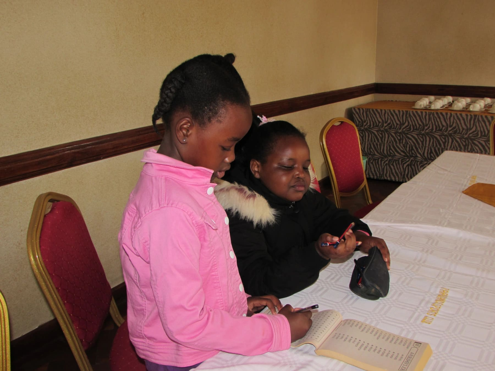

Hi. Welcome and please take a seat over there. Don't be shy engage with the others in completing the crossword game.
After you're done, come play this game with us. First we have to make the cutouts
then we play.
Seems we're all here now, gather around and let's pray. We are so glad you're okay and that your week was amazing. We give thanks to God for that.
Speaking of, let's sit and talk about God for a minute. But first , let's watch this short clip and then discuss it afterwards, okay?
Please share with us what you've learnt from the video. Oh, it's about Paul and Silas? Go on, do tell, do tell!
We have some brilliant students in this class. To sum up what you just said, the lesson was on ‘Being The Bigger Person' and we learn this through the story of Paul and Silas when they were in jail. It could have been easier for them to let the guard harm himself after imprisoning them but they didn't. They encouraged him to live and chose not to flee so that he would not suffer the consequences thereafter. Wow what a story!
Take a breather then come back for the life-skill lesson.
Today we're learning ‘Money Responsibility'. Join one of those groups over there and together discuss the money questions listed on the paper.Find solutions then come back together for one final discussion.
We hope your take from the lesson is the same as ours; money is finite and should be spent wisely. Good job guys, you came up with really good solutions.
Here are some picture printouts for you to color.
You've learnt so much and done so much so far, you deserve a break. Take some refreshers, tea and snacks.
In fact, we are so impressed, here's an interesting short story for you to watch as you take your tea.
Go have some fun in the field and the playground then comeback ready for the art session.
Seems you had fun, pick a brush and follow the instructions. Shouldn't be hard at all. Give it your best and most importantly have fun.
Time to give some awards. Let's congratulate the winners with a round of applause. They've done so well and come so far to win the silver badge. Makofi!
Next time we have no doubt it'll be you up there that we're celebrating. Keep working hard and doing good, we believe you'll do it!
Our day has finally come to an end, go home safely. Have a good week and see you back here next week, same place same time bye!